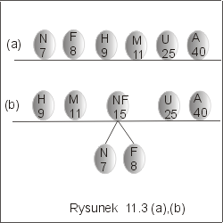
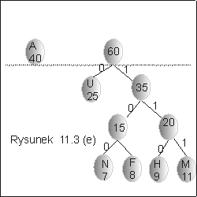

| « poprzedni punkt | nastêpny punkt » |
Konstrukcjê optymalnego kodu prefiksowego zaproponowa³ David Huffman. W tym punkcie wyk³adu przedstawimy metodê budowy drzewa kodowego dla optymalnego kodu prefiksowego Huffmana.
Drzewo kodowe Huffmana jest drzewem binarnym, lokalnie pe³nym. W ka¿dym wierzcho³ku wewnêtrznym tego drzewa pamiêtamy sumê czêsto¶ci znaków wystêpuj±cych w poddrzewach tego wierzcho³ka. Ka¿dy wierzcho³ek drzewa bêdzie wiêc mia³, oprócz referencji do lewego i prawego poddrzewa, atrybut f, oznaczaj±cy czêsto¶æ wystêpowania znaku lub grupy znaków odpowiadaj±cych drzewu o korzeniu w tym wê¼le. W li¶ciach bêd± pamiêtane dodatkowo znaki kodowanego alfabetu. Do zapamiêtania alfabetu oraz wierzcho³ków tworzonego drzewa, algorytm Huffmana u¿ywa kolejki priorytetowej.
Szkic algorytmu
1. Utwórz kolejkê priorytetow± pq zawieraj±c± wêz³y tworzonego drzewa. Pocz±tkowo elementami kolejki s± li¶cie drzewa. Porz±dek elementów w kolejce priorytetowej zale¿y od czêsto¶ci przypisanej znakom.
2. Drzewo kodowe buduje siê od do³u, od li¶ci, które s± traktowane jako drzewa z jednym tylko wêz³em. W ka¿dym kroku algorytmu, zamiast kolejnych dwóch wierzcho³ków, których czêsto¶ci s± najmniejsze, wstawiamy do kolejki priorytetowej pq nowy wêze³, którego etykiet± jest suma czêsto¶ci przypisanych usuniêtym wêz³om. Punkt 2 powtarzamy, tak d³ugo, a¿ w kolejce priorytetowej pozostanie tylko jeden element. Bêdzie to korzeñ drzewa kodowego.
Algorytm Huffmana mo¿na zaimplementowaæ na wiele sposobów, które zale¿± od konkretnej implementacji kolejki priorytetowej. Jedn± z mo¿liwo¶ci, jest u¿ycie kopca zaimplementowanego w tablicy. Opracowanie szczegó³ów tego algorytmu pozostawiamy Czytelnikowi jako æwiczenie. Zwróæmy uwagê, ¿e algorytm Huffmana w pewnych przypadkach mo¿e dzia³aæ niejednoznacznie, w tym sensie, ¿e je¶li czêsto¶ci wystêpowania dwóch grup znaków s± takie same, to wybór kolejno¶ci odpowiadaj±cych im wêz³ów mo¿na ustaliæ dowolnie, gdy¿ nie ma on wp³ywu na d³ugo¶æ otrzymanego kodu, ale drzewa kodowe mog± siê ró¿niæ.
W przedstawionym poni¿ej algorytmie "HuffmanKod" zak³adamy, ¿e TAB jest tablic±,w której znajduj± siê znaki kodowanego alfabetu oraz ich czêsto¶ci wystêpowania w pewnym pliku.
| HuffmanKod(TAB : tablica){ | ||
| //utwórz kolejkê priorytetow± z
elementów //danej tablicy TAB , uporz±dkowan± //ze wzglêdu na atrybut f |
||
| n := TAB.length; | // n jest liczb± znaków alfabetu | |
| for i :=1 to (n-1) do | ||
| v := new node; | ||
| v.left := min(pq); pq := delmin(pq); | // min(pq) wybiera wêze³ o najmniejszym atrybucie f | |
| v.right := min(pq); pq := delmin(pq); | ||
| v.f := v.left.f + v.right.f | ||
| pq := insert(v,pq); | //do³±czenie nowego wêz³a do kolejki priorytetowej | |
| od; | ||
| } | ||
Koszt algorytmu
Algorytm rozpoczynamy od utworzenia kolejki priorytetowej, której elementami s± li¶cie tworzonego drzewa kodowego. Koszt utworzenia tej kolejki, o ile zastosujemy algorytm konstrukcji kopca w tablicy, wynosi O(n), gdzie n jest liczb± znaków kodowanego alfabetu. W drugiej czê¶ci algorytmu konstruujemy drzewo. Zauwa¿my, ¿e po n-1 krokach, gdzie n jest liczb± znaków kodowanego alfabetu, kolejka zawiera tylko jeden wêze³. Rzeczywi¶cie, w ka¿dej iteracji, z kolejki s± wyjmowane dwa elementy i wstawiany jeden nowy wêze³. Oznacza to, ¿e po ka¿dej iteracji liczba elementów zmniejsza siê o jeden. Je¶li kolejka priorytetowa zosta³a zaimplementowana jako kopiec, to ka¿da z wykonywanych w pêtli operacji kosztuje O(lg n) porównañ. Wynika st±d, ¿e koszt wykonania pêtli "for" mo¿emy oszacowaæ z góry przez O(n ´ lg n). Ostatecznie, koszt ca³ego algorytmu mo¿emy oszacowaæ przez O(n ´ lg n).
Uwaga Algorytm Huffmana jest algorytmem zach³annym w tym sensie, ¿e w ka¿dym kroku wybiera wêz³y o najmniejszej czêsto¶ci.
Przyk³ad 3.1
Przyjmijmy, ¿e w pewnym tek¶cie wystêpuj± tylko litery A, F, H, M, N, U, a ich czêsto¶ci wystêpowania w tysi±cach wynosz± odpowiednio:40,8,9,11,7,25. Kolejne fazy dzia³ania algorytmu Huffmana przedstawiono na rysunku 11.3.
|  | ||
|  |
Z otrzymanego drzewa kodowego ³atwo odczytujemy kody liter A - 0, F - 1101, H - 1110, M - 1111, N - 1100, U - 10 . Ci±g 11101011011101111101100 jest kodem s³owa HUFFMAN.
Pytanie 4: Czy koszt algorytmu Huffmana zmieni siê, je¶li
zamiast struktury kopca, u¿yjemy tablicy uporz±dkowanej za pomoc± optymalnego
algorytmu sortowania, a wstawianie nowego wêz³a do tablicy zrealizujemy tak jak
w algorytmie InsertionSort?
| « poprzedni punkt | nastêpny punkt » |